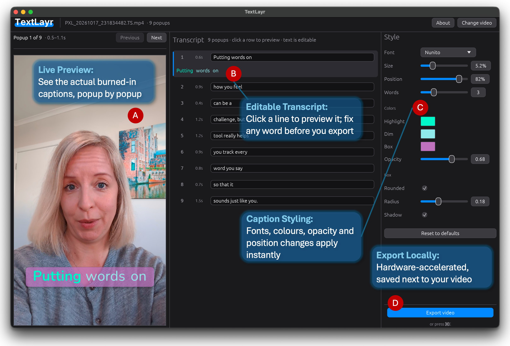
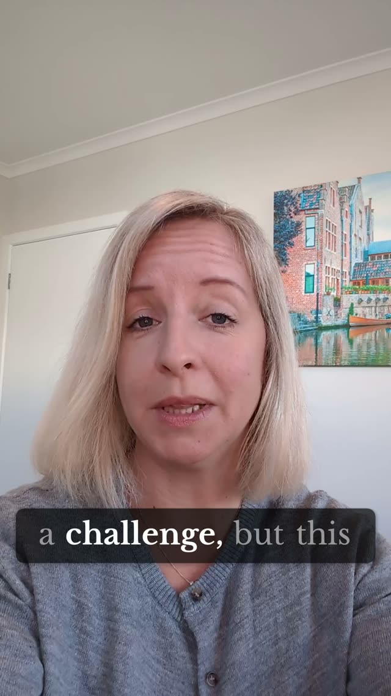
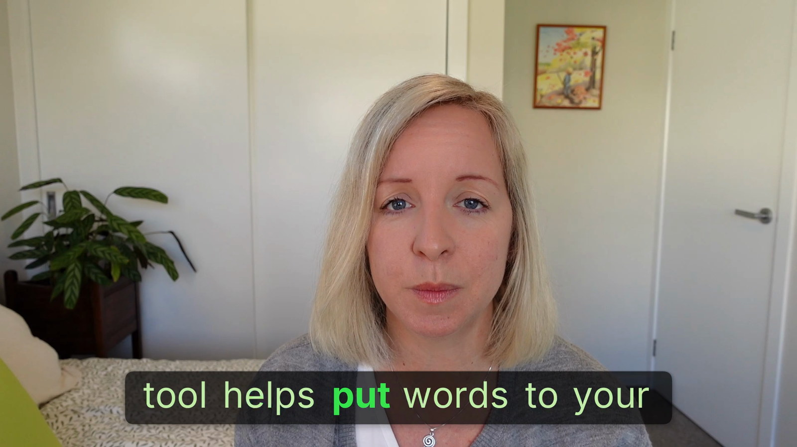

Word-synced popups
A few words on screen at a time with the spoken word lit up and the rest dimmed. Two to six words per popup, your call.
TextLayr transcribes your video on your own Mac and bakes in word-synced popup captions — the style that stops the scroll on Reels, TikTok and Shorts. Review every line first, fix the typos, then export.
— · — · free & open source (MIT) · macOS 13+ on Apple Silicon
Free & open source (MIT) · macOS 13+ on Apple Silicon · about 8 MB
A video exported with TextLayr — each word lights up as it's spoken.
One small app that does one job properly: turn a talking-head video into a captioned short.
A few words on screen at a time with the spoken word lit up and the rest dimmed. Two to six words per popup, your call.
Speech-to-text runs on your Mac via whisper.cpp with DTW word timings for tight sync. Nothing is sent to a server.
Whisper gets names wrong occasionally. Click any line to jump the preview there, edit the text, then export the version you actually want.
Font, size, highlight and dim colours, box colour and opacity, rounded corners, drop shadow, vertical position. Preferences stick between runs.
VideoToolbox encoding with audio copied through untouched. The transcript is cached, so restyling and re-exporting is instant.
The same pipeline runs headlessly for batch jobs and automation: textlayr video.mp4 --headless.
Any orientation — portrait, landscape, or a clip with rotation metadata. TextLayr works out the rest.
Watch the live preview, fix any words the model misheard, and dial in the caption style.
Hit Export (⌘E) and it writes <name>_textlayr.mp4 next to your input, ready to upload.



Grab TextLayr-latest.dmg — about 8 MB.
You can also find every build on the
Releases page.
Open the .dmg and drag the app onto the Applications shortcut in the window.
See the note below — macOS adds one extra step for apps it hasn't seen before.
TextLayr downloads what it needs once, then works offline forever after.
ffmpeg + ffprobeFor decoding and encoding video. If you already have them on your PATH (Homebrew, say), TextLayr uses those instead of downloading.
base.en (~148 MB) is the default and is quick. small.en (~488 MB) is slower but more accurate. You can switch later from the About window.
~/Library/Application Support/textlayr/ — nothing else on your Mac is touched.
Comfortable in a terminal? textlayr --setup does exactly the same thing, and
textlayr video.mp4 --headless runs the whole pipeline without a window.
Full flag list in the README.
Yes. It's MIT-licensed open source — no trial, no watermark, no per-minute limits, no account.
macOS on Apple Silicon (M-series). The source also builds and runs on Linux for development, but releases target macOS.
No. Transcription runs locally with whisper.cpp, and the export happens on your machine. The only network activity is the one-time dependency download and the optional daily update check.
Because it isn't notarized (that requires a paid Apple Developer account). Right-click the app in Applications and choose Open once — after that it launches normally.
No. TextLayr offers to download it on first run. If you already have it via Homebrew it will happily use that.
Good enough to be worth reviewing rather than fixing by hand. The default base.en model is fast; small.en is noticeably more accurate on names and jargon. Either way the transcript is editable before export.
Yes. The app is MIT-licensed and the video you export is entirely yours.
Yes — textlayr video.mp4 --headless runs the full pipeline without the GUI, and there are flags for model, font, colours, position and encoder.
Captions in, videos out. Nothing uploaded.